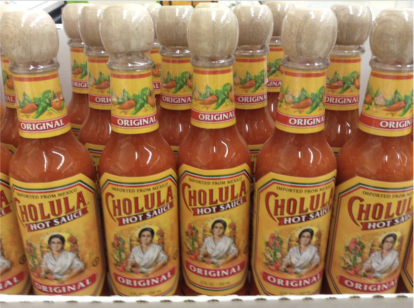
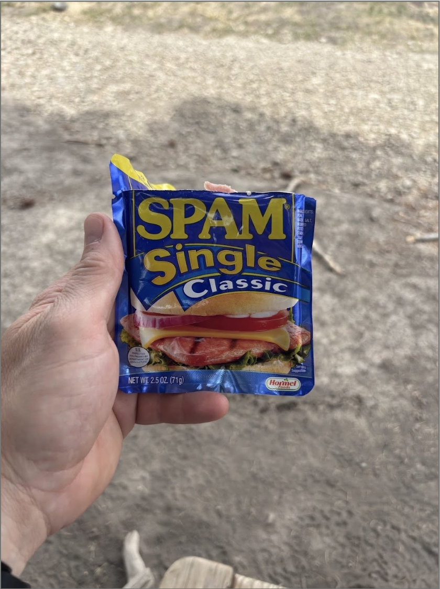

Drawing by me because I couldn't find a picture of SPAM with hot sauce on it. Wonder why
Jump to recipe
Traumatic backstory
Every good (and bad) recipe starts with a backstory, so here's mine:
This summer, I went on a backpacking trip in New Mexico at this
very random place that no one has ever heard of called Philmont.
We arrived at base camp and met our ranger who would be helping us
the first 2 days of the trek. We asked him many questions, but one
I distincly remember is asking him what his favorite food at
Philmont was. He said it was the SPAM, which sounded gross to me!
Then, it was time to pick up our food. Honestly, one of my main
concerns at the time was that the food was going to be bad.
Thankfully,
most of it looked ok, except for one thing: the SPAM they gave us.
The next moring we started our trek and we were supposed to eat the
SPAM for lunch that day. I was very hungry and very ready to eat
lunch, but when I opened up the SPAM I lost most of my appitite.
Nobody liked it, but they were all able to eat it, so I tried to
take a bite
and immediatly gagged. I knew I needed to eat something, so I tried
eating it with crackers, but it was still just as gross. Then I
remembered the small bottle of hot sauce I bought at base camp and
decided to carry for the entire trek. With the help of the hot
sauce, I was able to eat
1/3 of the SPAM! After that, I gave up, but I ate more than I thought
I would!
"It's edible if you're hungry enough"
- My Dad
I still don't believe that this could be our ranger's favorite. One of my biggest regrets is not asking him when we saw him after the trek if SPAM was actually his favorite, or if he was just lying to make us feel better about having to eat it. I guess I'll never know.
Tips, Tricks and Substitutions
I'm gonna be honest I don't have much for you because this recipe is very simple. I'll still try.
- Use Cholula hot sauce for the most accurate
taste!
- This was actually the first time I've ever had Cholula hot sauce, so now every time I have it, SPAM is the only thing I can think of!
- Make sure you use the SPAM singles! The SPAM blocks
from a can aren't the same!
- I don't actually know if this is true because I've never had the SPAM block from a can, but my logic is that it works the same way as brownies. The middle and edge peices of a brownie are different, so maybe that's the same with SPAM. The single SPAM would be like an all edge brownie.

Image by Mike Mozart, can be found
here

Image from my friend's dad, taken at Philmont
Recipe
| Preperation time: 1 minute | Servings: 1 |
| Ingredients | Amount |
|---|---|
| SPAM single classic | 1 package |
| Cholula hot sauce | 2 teaspoons |
- Leave the SPAM unrefrigerated for at least 20 hours
- Open SPAM package
- Dig through all the pockets in your backpack and find the hot sauce
- Open hot sauce and don't loose cap
- Pour the hot sauce onto the exposed part of the SPAM, making sure to leave some in the package so you can use the wrapper to hold it.
- Attept to eat it